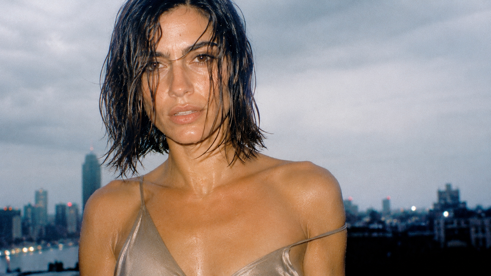
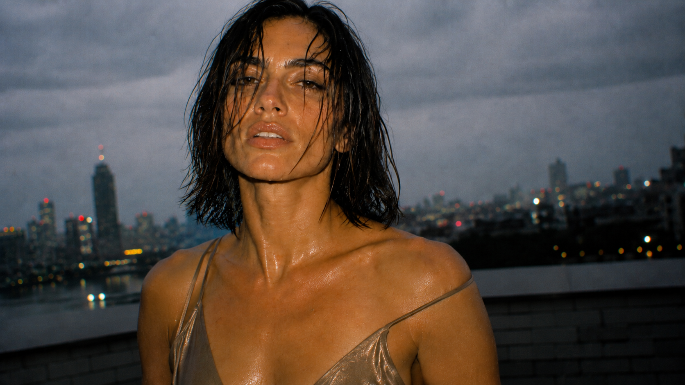
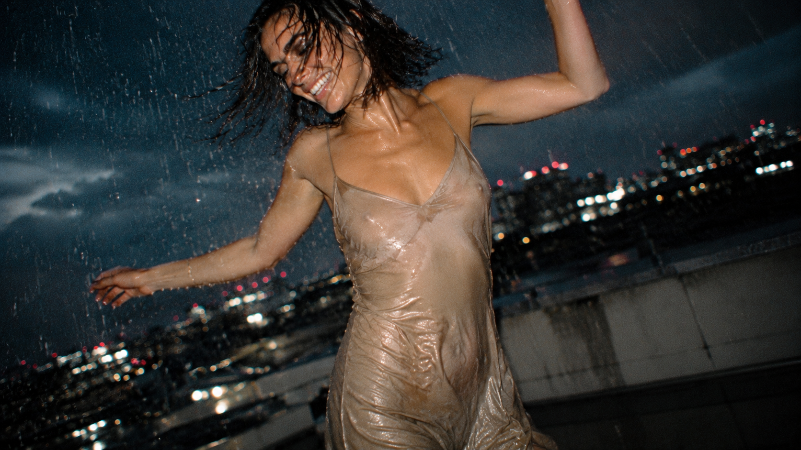
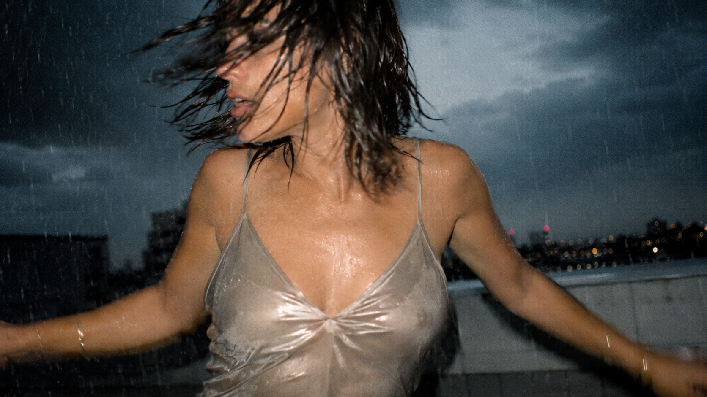
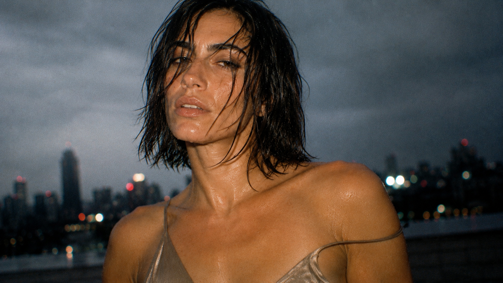

Portraits, plans buste, et une danse sous la pluie sur un toit — l'orage remplace le soleil de midi, mais la caméra garde le même réflexe : suivre plutôt que composer.
Portraits, bust shots, and a rooftop rain dance — the storm replaces the midday sun, but the camera keeps the same reflex: follow rather than compose.
orage, contre-jour, souffle court après la danse
storm light, backlit, short breath after the dance




